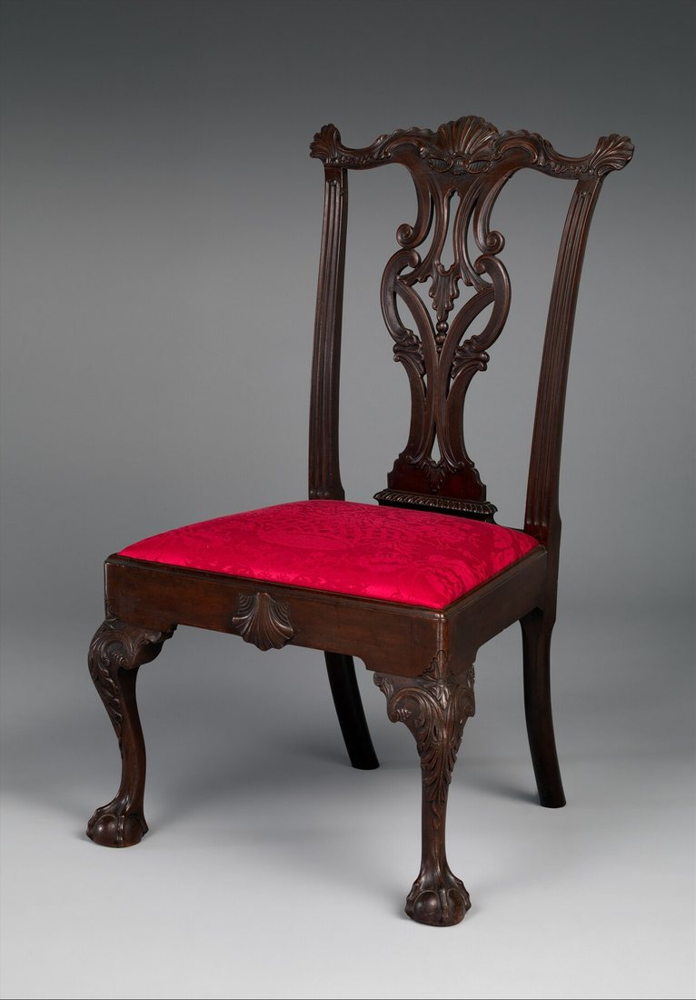
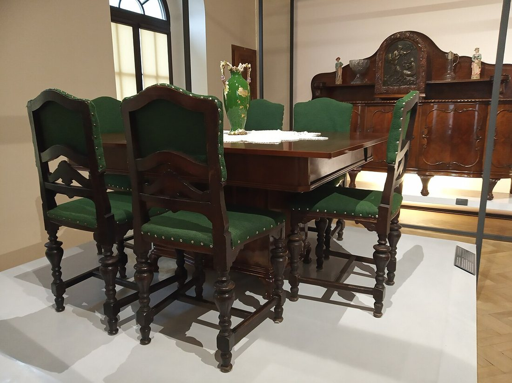
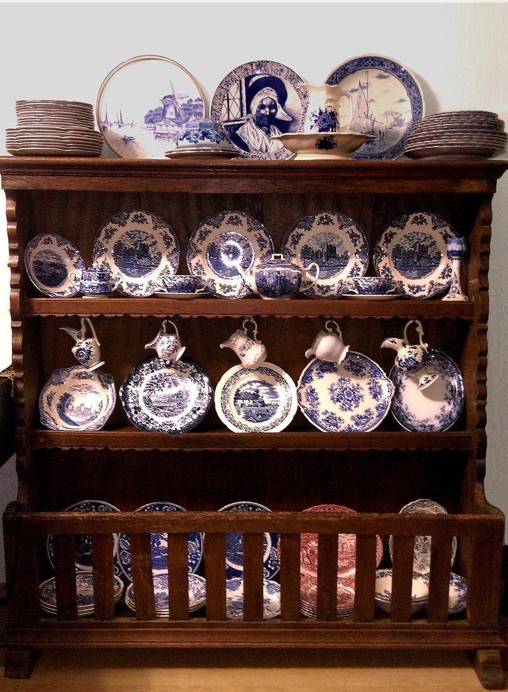

Көркем еңбек (ұлдар) · 5-бөлім · Дизайн және қолөнер Art & Craft (Boys) · Section 5 · Design & Crafts Художественный труд (мальчики) · Раздел 5 · Дизайн и ремёсла
Жиһаз және интерьер заттары
Furniture and Interior Objects
Мебель и предметы интерьера
Жиһаз түрлері, материалдар, өлшем мен эргономика, қарапайым отырғышты жобалау. Types of furniture, materials, sizes and ergonomics, and designing a simple stool. Виды мебели, материалы, размеры и эргономика, проектирование простого табурета.
🪑 Жиһаз дегеніміз не 🪑 What Is Furniture 🪑 Что такое мебель
Жиһаз — адамның тұрмысы мен еңбегіне қажет жылжымалы бұйымдар: отыруға, жатуға, тамақтануға, заттарды сақтауға арналған. Интерьер заттары деп бөлменің ішкі көрінісін толықтыратын шамдар, кілемдер, айналар, сағаттар мен сәндік бұйымдарды айтады. Жақсы жиһаз үш талапты біріктіреді: пайдалылық (қызметі), беріктік (мықтылығы) және сұлулық (пішіні мен әрленуі). Дизайнер бұл үшеуін үйлестіріп, материалды, өлшемді және әрлеуді таңдайды. Furniture is the set of movable objects we need for living and working: for sitting, sleeping, eating and storing things. Interior objects are the lamps, rugs, mirrors, clocks and decorations that complete a room. Good furniture combines three demands: usefulness (its function), durability (its strength) and beauty (its form and finish). A designer balances all three when choosing the material, the dimensions and the surface treatment. Мебель — это передвижные изделия, необходимые человеку для быта и труда: чтобы сидеть, спать, есть и хранить вещи. Предметы интерьера — светильники, ковры, зеркала, часы и декор, которые завершают облик комнаты. Хорошая мебель объединяет три требования: пользу (функцию), прочность (надёжность) и красоту (форму и отделку). Дизайнер согласует все три, выбирая материал, размеры и способ отделки.
📦 Қызметі бойынша жиһаз түрлері 📦 Types of Furniture by Function 📦 Виды мебели по назначению
ОтыруғаFor sittingДля сидения
Орындық, табуретка, диванChair, stool, sofaСтул, табурет, диван
ЖатуғаFor lyingДля лежания
Кереует, диванBed, couchКровать, тахта
СақтауғаFor storageДля хранения
Шкаф, сөре, сандықCabinet, shelf, chestШкаф, полка, сундук
ЖұмысқаFor workingДля работы
Үстел, жұмыс орныTable, workbenchСтол, верстак
СәндікDecorativeДекоративная
Шам, айна, сағатLamp, mirror, clockСветильник, зеркало, часы
🖼️ Жиһаз және интерьер галереясы 🖼️ Furniture & Interior Gallery 🖼️ Галерея мебели и интерьера
Үлкейту үшін кескінді басыңыз. 🔍 Tap an image to enlarge it. 🔍 Нажмите на изображение, чтобы увеличить. 🔍




🪵 Жиһаз материалдары 🪵 Materials for Furniture 🪵 Материалы для мебели
| Материал | Свойства | Где применяют |
|---|---|---|
| Массив дерева | Прочный, красивая текстура, дорогой, боится сырости | Столы, стулья, фасады, резьба |
| Фанера | Лёгкая, гибкая, прочная на изгиб | Гнутые сиденья, задние стенки, ящики |
| ДСП / МДФ | Дешёвые, ровные плиты, требуют кромки | Корпусная мебель, шкафы, полки |
| Металл | Очень прочный, тонкий, холодный на вид | Каркасы, ножки, фурнитура |
| Стекло, ткань | Декоративные, дополняют корпус | Столешницы, дверцы, обивка |
| Материал | Қасиеттері | Қолданылуы |
|---|---|---|
| Массив ағаш | Берік, әдемі текстура, қымбат, ылғалдан қорқады | Үстел, орындық, есік беті, ою |
| Фанера | Жеңіл, иілгіш, иілуге берік | Иілген отырғыш, артқы қабырға, тартпа |
| ДСП / МДФ | Арзан, тегіс тақта, жиегін жабу керек | Корпусты жиһаз, шкаф, сөре |
| Металл | Өте берік, жұқа, салқын көрінеді | Каркас, аяқ, фурнитура |
| Шыны, мата | Сәндік, корпусты толықтырады | Үстел беті, есік, қаптама |
| Material | Properties | Where it is used |
|---|---|---|
| Solid wood | Strong, beautiful grain, costly, fears damp | Tables, chairs, fronts, carving |
| Plywood | Light, bendable, strong in bending | Curved seats, back panels, drawers |
| Chipboard / MDF | Cheap, flat boards, need edge-banding | Carcass furniture, cabinets, shelves |
| Metal | Very strong, thin, looks cold | Frames, legs, fittings |
| Glass, fabric | Decorative, complete the carcass | Tabletops, doors, upholstery |
📏 Өлшем және эргономика 📏 Dimensions & Ergonomics 📏 Размеры и эргономика
Отырғыш биіктігіSeat heightВысота сиденья
Аяқ еденге тегіс тиіп, тізе тік бұрыш құрауы тиіс. Feet rest flat on the floor and knees make a right angle. Стопы стоят на полу, колени образуют прямой угол.
Үстел биіктігіTable heightВысота стола
Жазу-жұмыс үстелінің ыңғайлы стандарт биіктігі. The comfortable standard height for a desk or worktable. Удобная стандартная высота письменного и рабочего стола.
Үстел мен орындық айырмасыTable-to-seat gapРазница стол–сиденье
Тізе еркін сыятындай ара қашықтық. Enough clearance for the knees to sit freely. Зазор, в который свободно помещаются колени.
Эргономика — жиһазды адам денесінің өлшеміне (антропометрия) сай етіп жобалау туралы ғылым. Дұрыс өлшем шаршауды азайтады, омыртқаны сақтайды әрі бұйымды ыңғайлы етеді. Ergonomics is the science of fitting furniture to the human body (anthropometry). Correct sizes reduce fatigue, protect the spine and make an object comfortable to use. Эргономика — наука о том, как подогнать мебель под размеры тела человека (антропометрию). Верные размеры снижают усталость, берегут позвоночник и делают изделие удобным.
🔨 Қарапайым табуретканы жобалау және жасау 🔨 Designing and Making a Simple Stool 🔨 Проектируем и делаем простой табурет
Идея мен эскиз. Болашақ табуреттің пішінін, өлшемін сызып, ескіз жасаймыз. Idea & sketch. Draw the shape and sizes of the future stool as a sketch. Идея и эскиз. Рисуем форму и размеры будущего табурета — делаем эскиз.
Сызба (чертёж). Дәл өлшеммен жұмыс сызбасын дайындаймыз, бөлшектерді санаймыз. Working drawing. Make an exact drawing with dimensions and list the parts. Чертёж. Готовим рабочий чертёж с точными размерами, считаем детали.
Бөлшектерді кесу. Тақтайды белгілеп, отырғыш, аяқ, царгаларды араламен кесеміз. Cut the parts. Mark the board and saw the seat, legs and rails to size. Раскрой деталей. Размечаем доску и выпиливаем сиденье, ножки и царги.
Өңдеу. Жиектерді жонып, бетін егеу мен қайрақ қағазбен тегістейміз. Shaping. Plane the edges and smooth all surfaces with a file and sandpaper. Обработка. Снимаем фаски и шлифуем поверхности напильником и наждачкой.
Құрастыру. Аяқтарды царгамен желімдеп, бұранда не нагельмен бекітеміз. Assembly. Join legs to rails with glue and fix with screws or dowels. Сборка. Соединяем ножки с царгами на клей и закрепляем шурупами или нагелями.
Әрлеу. Беттік қорғаныс үшін лак, май не бояумен әрлеп, кептіреміз. Finishing. Protect the surface with varnish, oil or paint, then let it dry. Отделка. Покрываем лаком, маслом или краской для защиты и сушим.
🎨 Интерьер дизайнының қағидалары 🎨 Principles of Interior Design 🎨 Принципы дизайна интерьера
Түс, пішін мен материал бір-бірімен үйлесіп, тұтас көрініс береді. Colour, form and material agree and read as one whole. Цвет, форма и материал согласованы и читаются как единое целое.
Бөлмедегі заттар салмағы бойынша бір жаққа ауып кетпейді. Objects in the room are not all crowded onto one side. Предметы в комнате распределены, не перевешивая в одну сторону.
Бір жарқын зат (шам, кілем) назарды өзіне тартатын орталық болады. One bright object (a lamp, a rug) becomes the focal point. Один яркий предмет (светильник, ковёр) становится смысловым центром.
Жиһаз еркін жүруге кедергі болмай, қолжетімді орналасады. Furniture is placed so people can move and reach things freely. Мебель расставлена так, чтобы свободно двигаться и всё доставать.